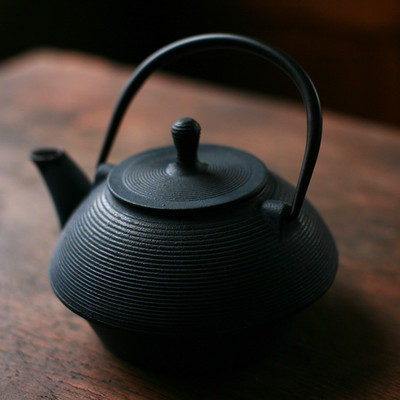

Teas have a very storied past. It all begins in a tea field in Southern India

"Japanese Teapot" by PHOTO/arts Magazine is licensed under CC BY 2.0. To view a copy of this license, visit https://creativecommons.org/licenses/by/2.0/?ref=openverse.
Japanese teapots generally are cast from iron